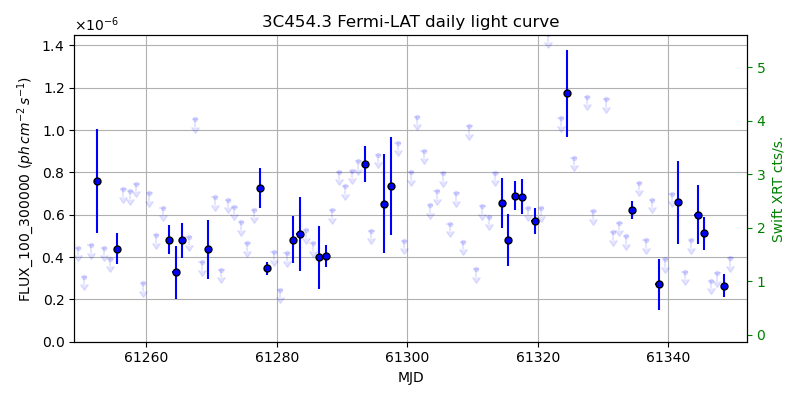
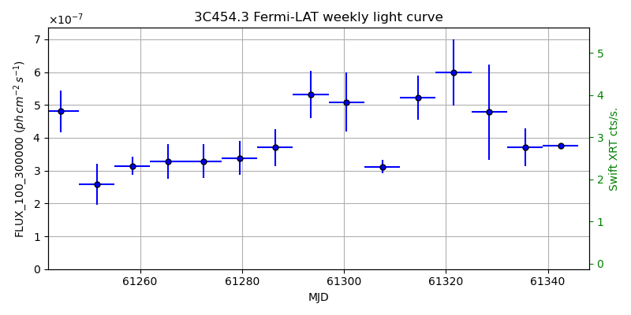
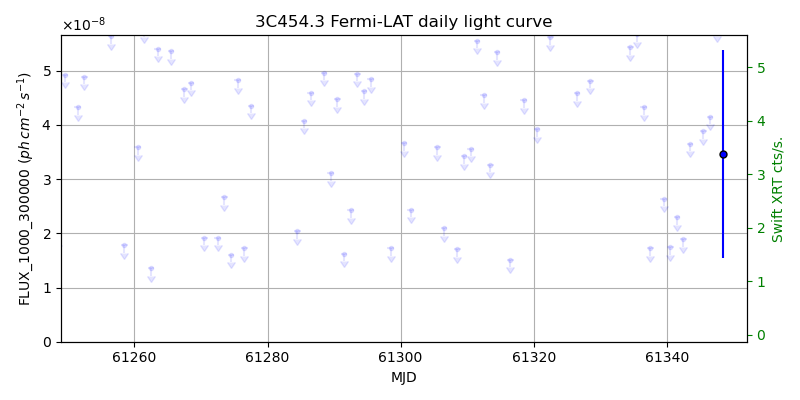
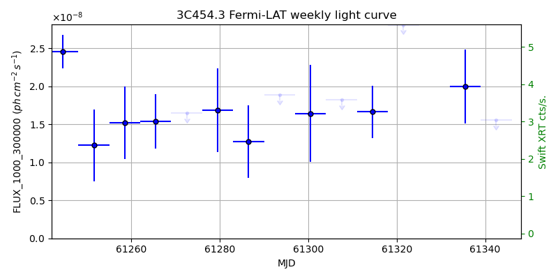

LAT Lightcurve site: https://fermi.gsfc.nasa.gov/ssc/data/access/lat/msl_lc/source/3C_454d3
Swift site: https://www.swift.psu.edu/monitoring/source.php?source=3C454.3
NED: Query
Time of last update of this page: UT: 2026-11-13 16:30 (MJD: 61357.688)
| Property | Value |
|---|---|
| R.A. | 22:53:57.84 |
| Dec. | 16:08:52.8 |
| z | 0.858 |
| 3FGL SpectrumType | PLSuperExpCutoff |
| 3FGL PL Index | |
| 3FGL Flux_100_300000 | 2.39e-06 1 / (s cm2) |
| 3FGL Flux_1000_300000 | 1.06e-07 1 / (s cm2) |
| 3FGL Flux >200 GeV | 7.45e-14 1 / (s cm2) |
| 3FGL Extrap. Crab >200 GeV | 0.00 |
| 3FGL Flux After EBL Absorption >200GeV | 4.70e-15 1 / (s cm2) |
| 3FGL EBL Crab Fraction >200GeV | 0.00 |

| MJD | dMJD | Flux | dFlux | Frac3FGL | FracCrab>200GeV | EBLFracCrab>200GeV |
|---|---|---|---|---|---|---|
| 61348.50 | 0.50 | 2.63e-07 | 5.44e-08 | 0.11 | 0.00 | 0.00 |
| 61349.50 | 0.50 | 3.96e-07 | 0.00e+00 | 0.00 | 0.00 | 0.00 |
| 61350.50 | 0.50 | 3.08e-07 | 0.00e+00 | 0.00 | 0.00 | 0.00 |
| 61351.50 | 0.50 | 7.17e-07 | 0.00e+00 | 0.00 | 0.00 | 0.00 |
| 61352.50 | 0.50 | 5.41e-07 | 0.00e+00 | 0.00 | 0.00 | 0.00 |

| MJD | dMJD | Flux | dFlux | Frac3FGL | FracCrab>200GeV | EBLFracCrab>200GeV |
|---|---|---|---|---|---|---|
| 61321.50 | 3.50 | 5.99e-07 | 1.01e-07 | 0.25 | 0.00 | 0.00 |
| 61328.50 | 3.50 | 4.78e-07 | 1.46e-07 | 0.20 | 0.00 | 0.00 |
| 61335.50 | 3.50 | 3.71e-07 | 5.76e-08 | 0.15 | 0.00 | 0.00 |
| 61342.50 | 3.50 | 3.75e-07 | 6.50e-09 | 0.16 | 0.00 | 0.00 |
| 61349.50 | 3.50 | 1.78e-07 | 4.72e-08 | 0.07 | 0.00 | 0.00 |

| MJD | dMJD | Flux | dFlux | Frac3FGL | FracCrab>200GeV | EBLFracCrab>200GeV |
|---|---|---|---|---|---|---|
| 61348.50 | 0.50 | 3.47e-08 | 1.92e-08 | 0.33 | 0.00 | 0.00 |
| 61349.50 | 0.50 | 6.08e-08 | 0.00e+00 | 0.00 | 0.00 | 0.00 |
| 61350.50 | 0.50 | 1.46e-08 | 0.00e+00 | 0.00 | 0.00 | 0.00 |
| 61351.50 | 0.50 | 2.16e-08 | 0.00e+00 | 0.00 | 0.00 | 0.00 |
| 61352.50 | 0.50 | 3.91e-08 | 0.00e+00 | 0.00 | 0.00 | 0.00 |

| MJD | dMJD | Flux | dFlux | Frac3FGL | FracCrab>200GeV | EBLFracCrab>200GeV |
|---|---|---|---|---|---|---|
| 61321.50 | 3.50 | 2.81e-08 | 0.00e+00 | 0.00 | 0.00 | 0.00 |
| 61328.50 | 3.50 | 3.72e-08 | 0.00e+00 | 0.00 | 0.00 | 0.00 |
| 61335.50 | 3.50 | 2.00e-08 | 4.86e-09 | 0.19 | 0.00 | 0.00 |
| 61342.50 | 3.50 | 1.56e-08 | 0.00e+00 | 0.00 | 0.00 | 0.00 |
| 61349.50 | 3.50 | 1.23e-08 | 4.74e-09 | 0.12 | 0.00 | 0.00 |
--------------------------------------------------------- Using user-supplied coords: 22:53:57.84 16:08:52.8 2000 --------------------------------------------------------- FLWO UT night of: 2026-11-14 Local Sid. @ Midnight: 03:09 Sunset (-15.0) (local, UT): 18:35 01:35 Sunrise (-15.0) (local, UT): 05:42 12:42 Moonrise (local, UT): Moonset (local, UT): 20:50 03:50 Moon phase: 0.22 --------------------------------------------------------- AzTime LSID UT Obj_el Obj_az Mn_el Mn_az Sep. --------------------------------------------------------- 18:35 21:44 01:35 67.7 129.4 20.1 218.2 71.1 19:05 22:14 02:05 72.0 146.3 16.0 223.7 70.9 19:35 22:44 02:35 74.4 170.0 11.6 228.6 70.7 20:05 23:14 03:05 74.0 196.8 6.9 233.2 70.5 20:35 23:44 03:35 71.0 218.8 2.0 237.3 70.3 21:05 00:14 04:05 66.4 234.1 -2.2 241.2 70.1 21:35 00:44 04:35 60.8 244.6 -9.0 244.8 69.8 22:05 01:14 05:05 54.9 252.3 -14.6 248.2 69.6 22:35 01:44 05:35 48.7 258.3 -20.4 251.4 69.3 23:05 02:14 06:05 42.4 263.3 -26.2 254.5 69.1 23:35 02:44 06:35 36.0 267.7 -32.1 257.5 68.8 00:05 03:14 07:05 29.6 271.7 -38.1 260.6 68.5 00:35 03:45 07:35 23.2 275.4 -44.2 263.8 68.2 01:05 04:15 08:05 16.9 279.1 -50.2 267.1 67.9 01:35 04:45 08:35 10.6 282.7 -56.3 270.9 67.6 02:05 05:15 09:05 4.5 286.5 -62.4 275.3 67.3 02:35 05:45 09:35 -0.9 290.4 -68.4 281.1 67.0 03:05 06:15 10:05 -7.6 294.5 -74.2 289.9 66.7 03:35 06:45 10:35 -13.3 299.0 -79.6 306.2 66.3 04:05 07:15 11:05 -18.8 303.9 -83.2 343.5 66.0 04:35 07:45 11:35 -23.9 309.4 -82.1 35.1 65.7 05:05 08:15 12:05 -28.7 315.5 -77.4 61.2 65.4 05:35 08:45 12:35 -32.9 322.3 -71.8 73.4 65.1 05:42 08:52 12:42 -33.7 323.9 -70.5 75.2 65.1 --------------------------------------------------------- Dark hours >55 deg.: 1.24 srcstart (UT): 2026-11-14 03:50 srcend (UT): 2026-11-14 05:04